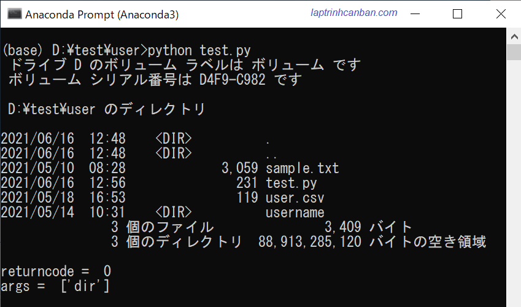
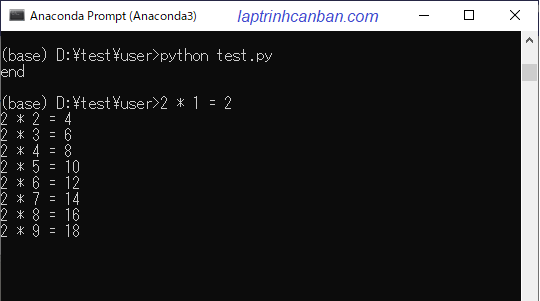

Hướng dẫn sử dụng module subprocess trong Python để gọi một lệnh hoặc ứng dụng khác từ Python. Bạn cũng sẽ học được cách dùng subprocess.run() và subprocess.Popen() trong module subprocess để xử lý đồng bộ và bất đồng bộ trong Python sau bài học này.
Subprocess trong Python là gì
Subprocess trong Python là một mô-đun giúp chạy lệnh hoặc các ứng dụng khác từ chương trình Python và thu về kết quả thực thi. Subprocess còn được gọi là mô-đun quy trình con và được bao gồm trong thư viện chuẩn Python.
Subprocess có thể gọi một lệnh hoặc một ứng dụng bên ngoài từ bên trong tập lệnh python. Ví dụ với Subprocess chúng ta có thể:
- Thực thi các lệnh CMD từ Python
- Gọi chương trình nén file 7z từ Python
- Chạy các lệnh của AWS CLI từ Python
- Chạy các lệnh deploy web từ Python
- Thực thi các lệnh Shell với Python
Ở trong các phiên bản Python cũ, chúng ta sử dụng subprocess trong Python với rất nhiều hàm như là call(), check_call(), check_output() hay Popen(). Tuy nhiên kể từ Python 3.5 trở đi, subprocess trong Python đã được làm lại và chúng ta chỉ cần sử dụng một hàm chung cho tất cả các trường hợp là subprocess.run(), và một class cung cấp nhiều lựa chọn linh hoạt hơn dành cho các nhà phát triển là subprocess.Popen() mà thôi.
Hàm subprocess.run() và xử lý đồng bộ trong Python
Hàm subprocess.run() giúp chúng ta tạo ra một xử lý đồng bộ khi gọi một lệnh hoặc ứng dụng khác từ Python. Điều đó có nghĩa, khi lệnh hoặc ứng dụng khác đã được gọi, chúng ta phải chờ cho nó kết thúc rồi mới có thể thực thi các lệnh python tiếp theo trong chương trình. Chúng ta sẽ cùng làm rõ xử lý đồng bộ này ở phần dưới đây.
Cú pháp hàm subprocess.run() trong python
Chúng ta sử dụng hàm subprocess.run() với cú pháp sau đây:
import subprocess
subprocess.run ([“lệnh chạy”], tùy chọn)
Trong đó:
lệnh chạylà lệnh gọi ứng dụng hoặc câu lệnh khác từ python. Ví dụ như lệnh gọi chương trình nén file 7z từ Python sẽ là “C:/Program Files/7-Zip/7z.exe a test.7z”, hoặc là lệnh CMD kiểm tra list file là dir trong windows hoặc ls trong Linux chẳng hạn.tùy chọnlà các chỉ định bạn có thể thêm khi sử dụng subprocess.
Các tùy chọn phổ biến có thể chỉ định khi sử dụng subprocess trong python như bảng dưới đây:
| Tùy chọn | Chức năng | Ví dụ |
|---|---|---|
| stdin | Đầu vào tiêu chuẩn. Sử dụng khi cần lấy dữ liệu đầu vào | stdin = subprocess.DEVNULL |
| stdout | Đầu ra tiêu chuẩn. Sử dụng khi cần lấy kết quả thực thi lệnh | stdout = subprocess.PIPE |
| stderr | Sai số chuẩn.Sử dụng khi cần lấy kết quả thực thi lệnh | stderr = subprocess.PIPE |
| shell | Sử dụng khi chạy các lệnh shell | shell = True |
| input | sử dụng các biến của python trong ứng dụng | input=input_text |
| cwd | Chỉ định thư mục thực thi | cwd=’data/user’ |
Giá trị trả về của hàm sẽ là một instance của class CompletedProcess. Bạn có thể sử dụng các thuộc tính kèm theo class này như returncode, stdout, args để trích xuất thông tin từ kết quả.
Sau đây chúng ta sẽ tìm hiểu các ví dụ cụ thể sử dụng subprocess.run() .để gọi một lệnh hoặc ứng dụng khác từ Python
Sử dụng hàm subprocess.run() để gọi các lệnh CMD từ Python
Ví dụ, chúng ta có một thư mục như sau:
|test |--user | |--username | |--sample.py | |--test.py
Để lấy danh sách tên file và thư mục con có thư mục này, thông thường chúng ta sẽ chạy lệnh CMD dir trong Windows, hoặc là ls trong Linux như sau:
(base) D:\test\user>dir |
Với subprocess, chúng ta có thể làm điều tương tự bằng cách thực thi lệnh CMD dir ở trên từ Python như sau:
import subprocess |
Ngoài ra chúng ta cũng có thể sử dụng các thuộc tính đi kèm với kết quả và lấy về thông tin chi tiết như sau:
print(result.returncode) |
Kết quả:

Sử dụng hàm subprocess.run() để gọi các ứng dụng khác từ Python
Một ví dụ khác, trong bài Đóng gói chương trình python với cx_Freeze chúng ta đã học cách chuyển file python sang exe và đóng gói chương trình python thông qua ví dụ tạo một chương trình in ra bảng cửu chương trong Python.
Giả sử chúng ta đã đóng gói và tạo ra ứng dụng in ra bảng cửu chương trong Python với tên là sample.exe với đường dẫn là D:\test\user\bang-cuu-chuong\sample.exe. Với subprocess, chúng ta có thể gọi trực tiếp ứng dụng này từ python như sau:
import subprocess |
Kết quả:
Không chỉ với ứng dụng mà chúng ta tự đóng gói, bạn cũng có thể gọi tất cả các ứng dụng khác chạy trên máy tính từ Python. Ví dụ, bạn có thể gọi chương trình nén file 7z từ python với cách viết sau đây:
import subprocess |
Hoặc là đơn giản, bạn có thể mở một file Excel từ python với cách viết như sau:
import subprocess |
Sử dụng hàm subprocess.run() để gọi chương trình python từ một tệp khác
Bạn cũng có thể gọi chương trình trong file python sample.py chứa mã nguồn của ứng dụng in ra bảng cửu chương trong Python ở trên bằng một tệp lệnh python khác.
Ví dụ, chúng ta có mã nguồn của ứng dụng in ra bảng cửu chương trong Python như sau:
for i in range(9): |
Chúng ta sẽ gọi chạy chương trình viết trong file sample.py từ tệp test.py bằng subprocess.run() với nội dung như sau:
import subprocess |
Sử dụng hàm subprocess.run() để xử lý đồng bộ trong Python
Xử lý đồng bộ trong Python có ý nghĩa, các câu lệnh sẽ được thực hiện theo thứ tự, và câu lệnh phía trước phải kết thúc thì câu lệnh sau đó mới có thể thực hiện.
Bằng cách sử dụng subprocess.run(), chúng ta có thể xử lý đồng bộ trong Python như ví dụ sau. Chúng ta sẽ gọi lại file sample.py ở trên với tệp python có mã nguồn sau đây:
import subprocess |
Mã nguồn trên gồm 2 phần là phần gọi quy trình con từ file sample.py và phần chạy lệnh in ra màn hình. Do subprocess.run() là xử lý đồng bộ nên quy trình con trong sample.py sẽ được thực thi, và sau khi quy trình con này kết thúc thì lệnh print mới được xử lý như sau:
Class subprocess.Popen() và xử lý bất đồng bộ trong Python
Class subprocess.Popen() giúp chúng ta tạo ra một xử lý bất đồng bộ khi gọi một lệnh hoặc ứng dụng khác từ Python. Điều đó có nghĩa, sau khi lệnh hoặc ứng dụng khác đã được gọi, chúng ta vẫn có thể xử lý các lệnh python khác, hoặc xử lý kết quả tạm thời của ứng dụng trong khi ứng dụng được gọi vẫn đang chạy.
Cú pháp của Class subprocess.Popen() cũng tương tự như hàm subprocess.run(), và cách sử dụng class subprocess.Popen() để gọi các lệnh CMD từ Python, gọi các ứng dụng khác từ Python hay gọi chương trình python từ một tệp khác cũng tương tự như với hàm subprocess.run().
import subprocess
result = subprocess.Popen ([“lệnh chạy”], tùy chọn)
Sử dụng class subprocess.Popen() để xử lý bất đồng bộ trong Python
Để làm rõ xử lý bất đồng bộ trong python bằng subprocess.Popen(), chúng ta sẽ gọi lại chương trình ghi trong file sample.py trong các ví dụ ở trên bằng subprocess.Popen() được ghi trong tập lệnh python có nội dung sau đây:
import subprocess |
Khác với subprocess.run() sẽ kết thúc thực thi chương trình trong sample.py rồi mới chạy lệnh print thì do trong subprocess.Popen() là xử lý bất đồng bộ nên quy trình con trong file sample.py sẽ được xử lý đồng thời với lệnh print("end"), và do lệnh print có tốc độ xử lý nhanh hơn nên đã in trước kết quả ra màn hình như sau:

Bạn có thể thấy rõ dòng end được in ra trước các kết quả của bảng cửu chương rồi phải không nào? Hãy so sánh với kết quả của xử lý đồng bộ trong python bằng hàm subprocess.run() ở trên :
Sử dụng các phương thức trong class subprocess.Popen()
Mặc dù cú pháp sử dụng subprocess.Popen() cũng tương tự như với subprocess.run(), tuy nhiên bạn cần chú ý rằng kết quả trả về của hai phương pháp này là hoàn toàn khác nhau.
Khác với hàm subprocess.run() trả về một instance của class CompletedProcess thì class subprocess.Popen() sẽ trả về một hàm tạo (constructor) với các phương thức xử lý linh hoạt kèm theo. Chúng ta không những có thể sử dụng các thuộc tính như returncode, stdout, args của hàm subprocess.run() mà còn có thể dùng thêm các phương thức như Popen.poll(),Popen.terminate(), Popen.communicate() hay Popen.kill().
Do đặc tính này mà subprocess.Popen() sẽ cung cấp nhiều lựa chọn hơn để xử lý lệnh cho các nhà phát triển, ví dụ như là kiểm tra quá trình chạy của quy trình con, dừng quy trình con giữa chừng, chờ quy trình con chạy hết và gán kết quả vào một biến chẳng hạn.
Ví dụ, chúng ta có thể sử dụng phương thức communicate() để chờ cho quy trình con chạy xong và nhận dữ liệu đầu vào và kết quả đầu ra xong xuôi, rồi mới tiến hành chạy các lệnh tiếp theo trong chương trình chính như sau:
import subprocess |
Kết quả, chương trình trong sample.py thực thi xong rồi lệnh print mới được thực thi , và dữ liệu đầu vào và kết quả đầu ra được gán vào biến result và in ra màn hình tương tự như với hàm subprocess.run() như sau:
Bạn có thể tìm hiểu cách sử dụng chi tiết các phương thức của class subprocess.Popen() tại https://docs.python.org/
Nén file Zip bằng Python
Một ứng dụng cụ thể khác của phương thức communicate() trong subprocess.Popen(), đó chính là gọi chương trình nén file 7z và tạo file zip sử dụng python. Trong hệ điều hành Windows, nếu bạn biết vị trí đã cài đặt phần mềm 7z trong máy tính của mình, giả sử là “C:/Program Files/7-Zip/7z.exe”, thì bạn có thể sử dụng tới hàm nén file Zip bằng Python sau đây để tự động nén file bằng python như sau:
def sevenzip(filename, zipname): |
Trong đó, zipname là đường dẫn của file nén tạo ra, và filename là đường dẫn của thư mục cần nén.
Ví dụ, bạn có thể gọi hàm trên để nén thư mục sample và tạo ra file nén sample.zip như sau:
zipname = "D:/code/sample.zip" |
Bằng cách tương tự thì bạn cũng có thể gọi phần mềm nén file 7z trong hệ điều hành Ubuntu, sau khi đã cài đặt nó trong máy tính, với hàm nén file zip bằng python như sau:
def sevenzip(filename, zipname): |
Sự khác biệt ở đây là với Windows, chúng ta cần chỉ định đường dẫn tới file thực thi của chương trình 7z, còn trong Ubuntu thì chúng ta chỉ cần viết câu lệnh trực tiếp 7z mà thôi.
Sự khác nhau giữa subprocess.Popen() và subprocess.run()
Như ở phần trên Kiyoshi đã phân tích, thì chúng ta sử dụng subprocess.run() trong tất cả các trường hợp thông thường cần gọi một lệnh hoặc ứng dụng khác từ Python, và subprocess.Popen() trong các trường hợp cần có sự linh hoạt hơn trong xử lý. Subprocess.run() được thiết kế cho người dùng thông thường chỉ cần các chức năng đơn giản, và subprocess.Popen() do được cung cấp nhiều lựa chọn linh hoạt hơn nên được dành cho các nhà phát triển.
Tuy nhiên ngoài sự khác nhau về tính linh hoạt ở trên, thì sự khác nhau căn bản lớn nhất giữa subprocess.Popen() và subprocess.run() đó là subprocess.run() là xử lý đồng bộ và subprocess.Popen() là xử lý bất đồng bộ trong python.
subprocess.run() là xử lý đồng bộ, do đó nếu như ứng dụng hoặc lệnh được gọi từ subprocess.run() chưa chạy xong thì Python cũng sẽ không thể thực thi các lệnh tiếp theo trong chương trình. Bạn phải chờ cho đến khi nó kết thúc mới có thể tiếp tục xử lý chương trình.
Trong khi đó với subprocess.Popen(), do là xử lý bất đồng bộ nên bạn có thể thực hiện đồng thời các tác vụ khác hoặc xử lý kết quả nhận được ngay trong khi chờ ứng dụng kết thúc.
Do đó, tùy thuộc vào yêu cầu trong chương trình của mình mà bạn hãy lựa chọn hợp lý một trong hai phương pháp này để gọi lệnh hoặc ứng dụng khác từ Python.
Tổng kết
Trên đây Kiyoshi đã hướng dẫn bạn về cách sử dụng module subprocess trong Python để gọi một lệnh hoặc ứng dụng khác từ Python, cũng như cách dùng subprocess.run() và subprocess.Popen() trong module subprocess để xử lý đồng bộ và bất đồng bộ trong Python rồi. Để nắm rõ nội dung bài học hơn, bạn hãy thực hành viết lại các ví dụ của ngày hôm nay nhé.
Và hãy cùng tìm hiểu những kiến thức sâu hơn về python trong các bài học tiếp theo.
URL Link
HOME › python cơ bản - lập trình python cho người mới bắt đầu>>18. đóng gói chương trình python